Goland 2019下载和安装（带破解补丁和汉化包）
工欲善其事必先利其器，命令行工具虽然能够满足我们一些基本操作的需求，但实际工作中怎么能没有一款趁手的开发工具呢？
学习Go语言同样如此，一个强大的集成开发环境（IDE）能够大大提高我们的开发效率，目前市面上比较流行的有下面这几种：
本节我们主要介绍 Windows 系统上 Goland 的安装和配置过程。
下载完成后直接双击运行安装包。
自定义安装目录，默认是安装在 C 盘，大家可以自行选择合适的位置安装，选择好后点击 Next 进入下一步操作。
下面是一些安装选项，选项中的一些信息大家可以根据自己的需要勾选，确认无误后点击 Next。
在开始菜单中为 Goland 的快捷方式选择一个文件夹，这一步我们不需要修改，直接点击 Install。
开始安装，等待安装完成即可。
安装完成，勾选 Run Goland 并点击 Finish，结束安装并启动 Goland。
点击 OK 后发现需要激活，免费试用的话也仅有 30 天的时间，这就尴尬了！别急下面就来告诉大家怎么破解它。首先点击 Exit 关闭正在运行的 Goland 程序。
然后，大家可以【点击这里】下载相关的破解补丁，如下所示：
将下载好的文件解压，并将破解补丁“jetbrains-agent.jar”复制到 Goland 安装目录下的 bin 目录中，放到这里没有什么特殊的意义，只是为了防止误删。
在 Goland 安装目录的 bin 目录下找到“goland.exe.vmoptions”和“goland64.exe.vmoptions”两个文件。用记事本将它们打开，并分别在两个文件的最后面追加“-javaagent:Goland 的安装目录\bin\jetbrains-agent.jar”，注意将路径修改成你电脑上 Goland 的安装目录，例如 “-javaagent:D:\anzhuang\GoLand\bin\jetbrains-agent.jar”，修改完成后记得保存。
运行 Goland 进入激活界面，选择“Activate”，激活方式选择“Activation code”使用激活码激活，并将激活码粘贴到下面，点击 OK 即可。激活码可以在下载的破解补丁中找到。
到这里 Goland 已经成功激活了，在开始敲代码之前需要先创建一个项目，选择“New Project”新建一个项目。
选择一个目录作为项目的根目录，并选择合适的Go语言版本，点击“Create”完成创建。
项目创建完成，终于可以开始敲代码了。
首先关闭 Goland ，然后在我们下载的破解补丁中找到“resources_cn.jar”，并将它复制到 Goland 安装目录下的 lib 目录中，如下图所示：
然后，同样在 lib 目录中找到“resources_en.jar”文件，它是 Goland 内置的一个英文补丁，这里需要将它删除或者重命名，建议大家选择重命名的方式，因为想要恢复英文的话还需要用到它。
运行 Goland ，你会发现 Goland 中的菜单已经变成我们熟悉的中文了。
学习Go语言同样如此，一个强大的集成开发环境（IDE）能够大大提高我们的开发效率，目前市面上比较流行的有下面这几种：
- GoLand：由 JetBrains 公司开发的一个新的商业 IDE；
- LiteIDE X：一款简单、开源、跨平台的Go语言 IDE；
- 第三方插件：Sublime Text、VS Code 等编辑器都有Go语言的相关插件。
本节我们主要介绍 Windows 系统上 Goland 的安装和配置过程。
Goland 简介
Goland 是由 JetBrains 公司开发的一个新的商业 IDE，旨在为 Go 开发者提供的一个符合人体工程学的新的商业 IDE。Goland 整合了 IntelliJ 平台（一个用于 java 语言开发的集成环境，也可用于其他开发语言），提供了针对Go语言的编码辅助和工具集成。Goland 下载和安装
大家可以从 Goland 的官网下载对应版本的 Goland 的安装包：（教程中使用的版本是 2019.2.3）- 官网下载地址：https://www.jetbrains.com/go/download/other.html；
- （推荐）直接复制本条链接到迅雷中下载：https://download.jetbrains.com/go/goland-2019.2.3.exe。
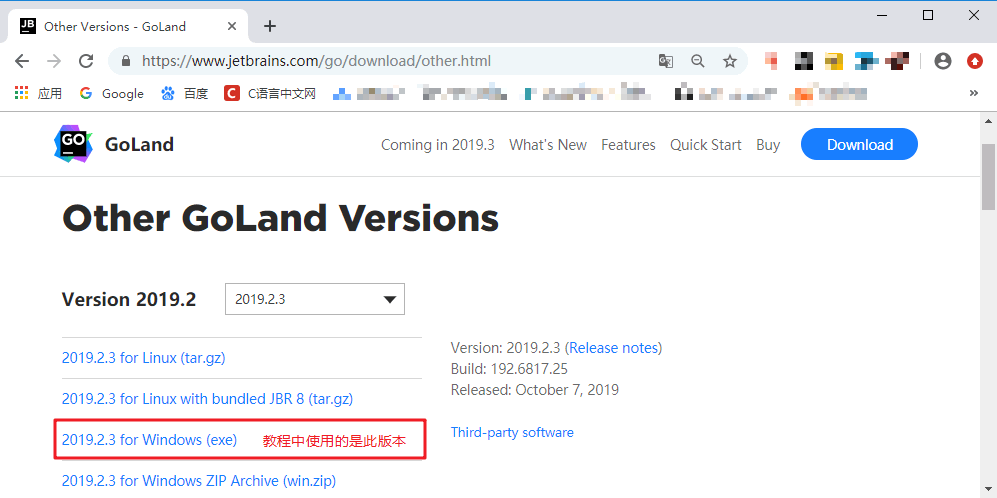
Goland 官网的下载页面
Goland 官网的下载页面
下载完成后直接双击运行安装包。
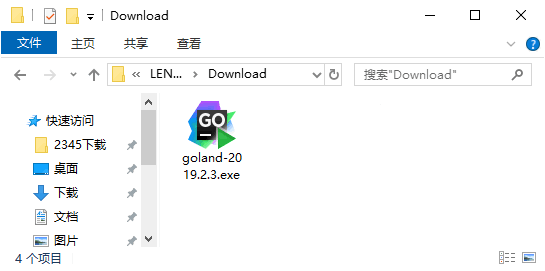
运行下载好的安装包
首先看到的是一个欢迎页面，不用管它，直接点击 Next 就行。运行下载好的安装包
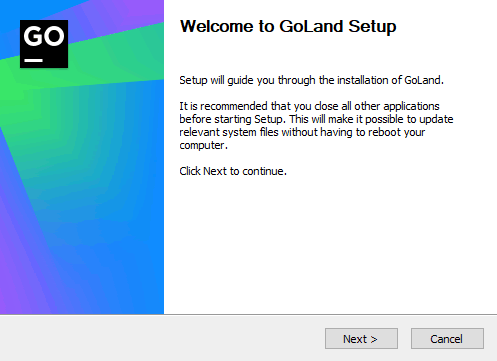
直接点击 Next 即可
直接点击 Next 即可
自定义安装目录，默认是安装在 C 盘，大家可以自行选择合适的位置安装，选择好后点击 Next 进入下一步操作。
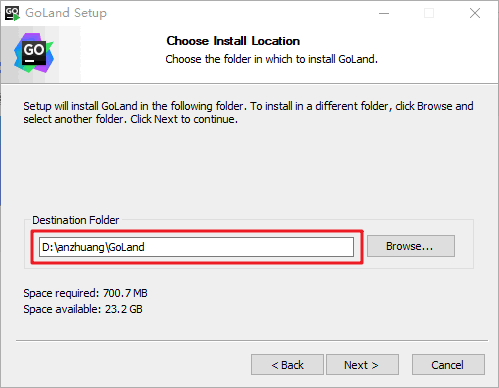
点击 Browse 即可修改安装目录
点击 Browse 即可修改安装目录
下面是一些安装选项，选项中的一些信息大家可以根据自己的需要勾选，确认无误后点击 Next。
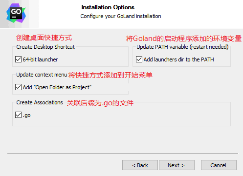
安装选项
安装选项
在开始菜单中为 Goland 的快捷方式选择一个文件夹，这一步我们不需要修改，直接点击 Install。
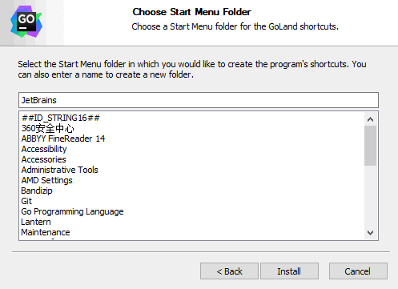
选择一个开始菜单中的文件夹
选择一个开始菜单中的文件夹
开始安装，等待安装完成即可。
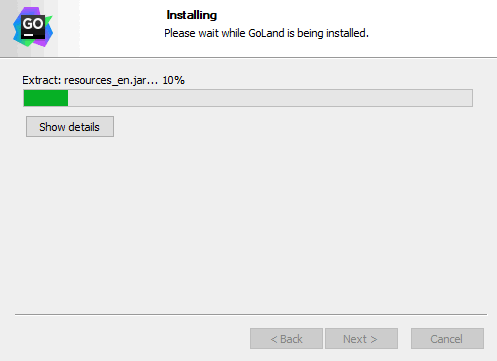
安装完成，勾选 Run Goland 并点击 Finish，结束安装并启动 Goland。
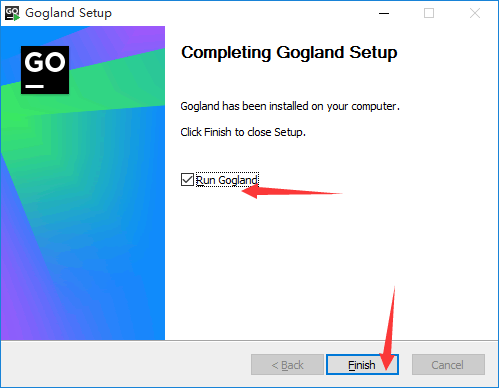
结束安装，并启动Goland
结束安装，并启动Goland
运行 Goland 并激活
第一次启动 Goland 时会提示我们导入设置信息，这里我们选择第二项，不导入设置信息。
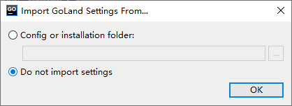
导入设置信息
导入设置信息
点击 OK 后发现需要激活，免费试用的话也仅有 30 天的时间，这就尴尬了！别急下面就来告诉大家怎么破解它。首先点击 Exit 关闭正在运行的 Goland 程序。
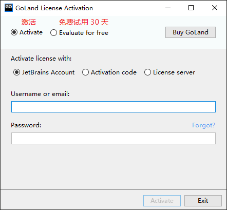
激活界面
激活界面
然后，大家可以【点击这里】下载相关的破解补丁，如下所示：
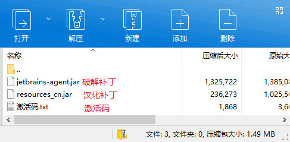
将下载好的文件解压，并将破解补丁“jetbrains-agent.jar”复制到 Goland 安装目录下的 bin 目录中，放到这里没有什么特殊的意义，只是为了防止误删。
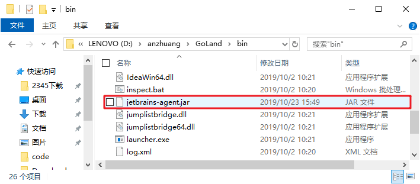
将破解补丁复制到 bin 目录
将破解补丁复制到 bin 目录
在 Goland 安装目录的 bin 目录下找到“goland.exe.vmoptions”和“goland64.exe.vmoptions”两个文件。用记事本将它们打开，并分别在两个文件的最后面追加“-javaagent:Goland 的安装目录\bin\jetbrains-agent.jar”，注意将路径修改成你电脑上 Goland 的安装目录，例如 “-javaagent:D:\anzhuang\GoLand\bin\jetbrains-agent.jar”，修改完成后记得保存。
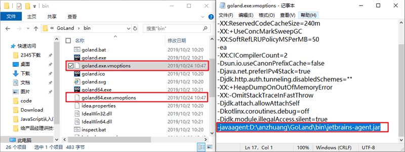
修改配置文件
修改配置文件
运行 Goland 进入激活界面，选择“Activate”，激活方式选择“Activation code”使用激活码激活，并将激活码粘贴到下面，点击 OK 即可。激活码可以在下载的破解补丁中找到。
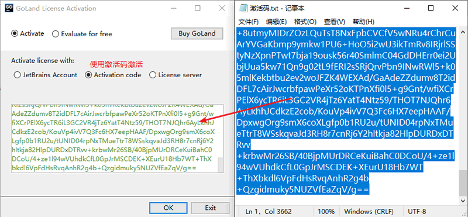
复制激活码
到这里 Goland 已经成功激活了，在开始敲代码之前需要先创建一个项目，选择“New Project”新建一个项目。
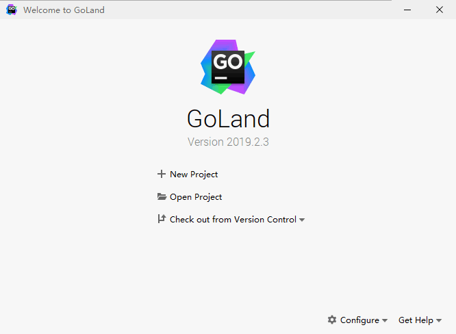
选择一个目录作为项目的根目录，并选择合适的Go语言版本，点击“Create”完成创建。
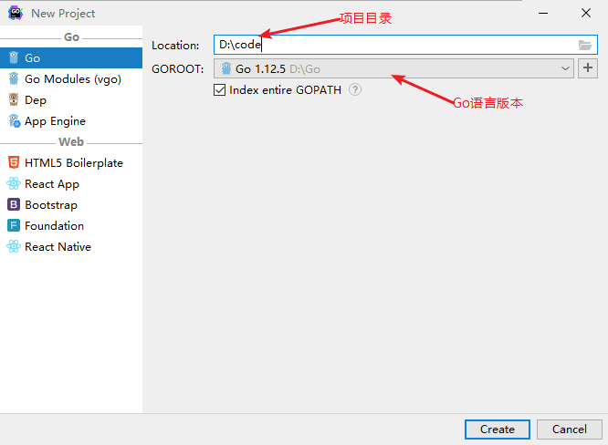
创建新项目
创建新项目
项目创建完成，终于可以开始敲代码了。
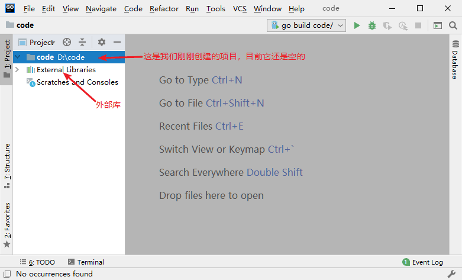
Goland 汉化
汉化在这里的意思是中文化，因为 Goland 的菜单都是英文的，这对于刚刚接触它的新手来说会造成一定的困扰，那要怎么实现中文呢？这里需要用到一些特殊的方法。首先关闭 Goland ，然后在我们下载的破解补丁中找到“resources_cn.jar”，并将它复制到 Goland 安装目录下的 lib 目录中，如下图所示：
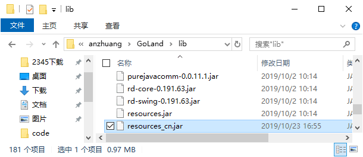
复制汉化补丁
复制汉化补丁
然后，同样在 lib 目录中找到“resources_en.jar”文件，它是 Goland 内置的一个英文补丁，这里需要将它删除或者重命名，建议大家选择重命名的方式，因为想要恢复英文的话还需要用到它。
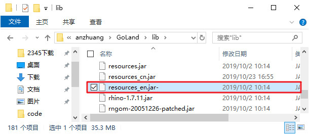
重命名 resources_en.jar
重命名 resources_en.jar
运行 Goland ，你会发现 Goland 中的菜单已经变成我们熟悉的中文了。
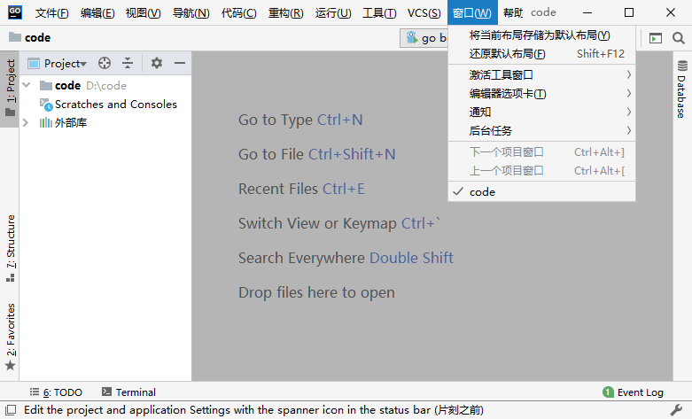
汉化后的效果
提示：汉化补丁并没有实现百分之百的汉化，仍然存在部分英文。
关注公众号「站长严长生」，在手机上阅读所有教程，随时随地都能学习。内含一款搜索神器，免费下载全网书籍和视频。

微信扫码关注公众号